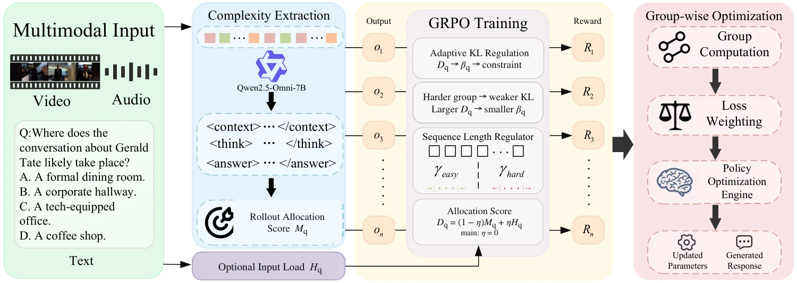
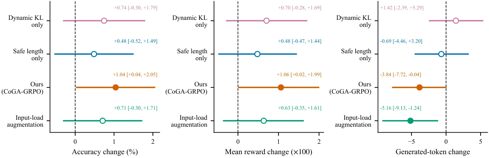

Score the rollout group
Sample six completions per prompt. Convert answer scores into correctness indicators and use their group mean p to compute the main allocation score.
Mq = 0.8(1 − pq2)

Video reasoning requires balancing answer accuracy and generation length. CoGA-GRPO extends group relative policy optimization with a shared score derived from rollout correctness. This score adapts KL regularization and determines which groups are eligible for length shaping. Within eligible groups, a bounded reward adjustment favors shorter correct responses that satisfy an answer-score margin.
We initialize CoGA-GRPO and Standard GRPO from the same reproduced Qwen2.5-Omni-7B structured-reasoning checkpoint. On 2,689 IntentBench questions under matched settings, CoGA-GRPO improves accuracy by 1.04 percentage points and reduces mean generation length by 3.84 tokens. It achieves 59.82% accuracy on Daily-Omni and 47.9% on WorldSense.

Sample six completions per prompt. Convert answer scores into correctness indicators and use their group mean p to compute the main allocation score.
Mq = 0.8(1 − pq2)
Groups with a larger allocation score receive a smaller KL penalty coefficient relative to the frozen reference policy.
Within eligible groups, correct responses that pass the score margin receive a bounded adjustment based on length relative to the group mean.
| Measure | Standard GRPO | CoGA-GRPO |
|---|---|---|
| Correct answers | 1,791 | 1,819 |
| Accuracy | 66.60% | 67.65% |
| Mean generated tokens | 452.98 | 449.14 |



IntentBench · Emotion

CoGA-GRPO selects option A, matching the reference answer. Its explanation cites the man in glasses smiling and nodding, his appreciative tone, and the audience’s cheers and applause.
These cues more directly support the interpretation of the man in glasses than the emotional state of the other speaker, although the question asks about both men.